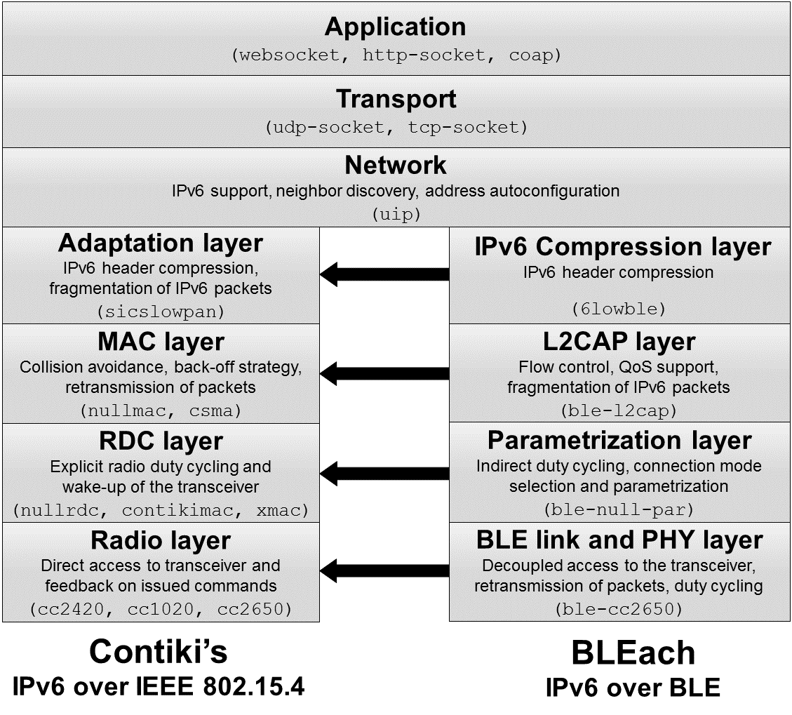

Using BLEach, Bluetooth Low Energy (BLE) devices can connect to the Internet of Things and exchange IPv6 packets using BLE connections (IPv6 over BLE).
BLEach is a fully open source IPv6-over-BLE stack for the Contiki OS. The stack implements full support for IPv6 over BLE according to the RFC 7668 standard and supports IPv6-over-BLE node and IPv6-over-BLE router devices. BLEach is interoperable with other RFC-7668-compliant devices and is able to exchange IPv6 packets with a maximum packet length of 1280 bytes. Because BLEach is fully open source, each of its modules can be optimized or extended to support a wide range of applications and hardware platforms.
BLEach is presended and evaluated in detail in the publication:
Michael Spörk, Carlo Alberto Boano, Marco Zimmerling, and Kay Römer.
BLEach: Exploiting the Full Potential of IPv6 over BLE in Constrained Embedded IoT Devices.
In Proceedings of the 15th ACM Conference on Embedded Networked Sensor Systems (SenSys), Delft (The Netherlands), November 2017.
[Link] [Paper]
Features
BLEach provides full support for both IPv6-over-BLE nodes and border routers according to the RFC 7668. Currently, BLEach supports the Texas Instruments CC2650 hardware platform.
BLEach implements the BLE link layer functionality BLE advertisement, BLE initiating, BLE connection slave, and BLE connection master according to the Bluetooth Specification v4.1. It implements the LE credit-based flow control mode of BLE's L2CAP layer and is able to exchange IPv6 packets with a length of up to 1280 bytes. When acting as a IPv6-over-BLE node, BLEach is able to connect to a single border router to communicate. A IPv6-over-BLE border router using BLEach can connect to up to 4 different node devices and exchange IPv6 packets.
Architecture
BlEach is fully compatible with the architecture of the Contiki OS and its network stack. It reuses the IPv6 and UDP support of Contiki and maps each of its four lowest stack layers to an existing layer in Contiki's stack.
BLE link and PHY layer
BLEach’s radio layer, the BLE link and PHY layer, directly maps into Contiki’s radio layer, but provides completely different functionality. This layer decouples the radio from the upper stack layers, prohibiting direct radio access. These files contain all the hardware specific code for supporting BLE.
Parametrization layer
The parametrization layer maps into Contiki’s radio duty cycling (RDC) layer. Since directly turning the radio on and off is not possible, this layer indirectly changes the radio duty cycle by changing the BLE connection parameters.
L2CAP layer
BLEach’S L2CAP layer directly maps into Contiki’s medium access control (MAC) layer. This layer provides support for fragmentation of large IPv6 packets and flow control.